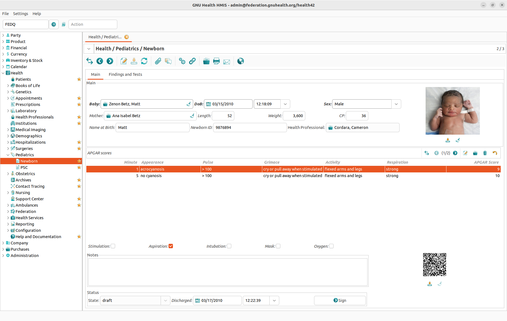
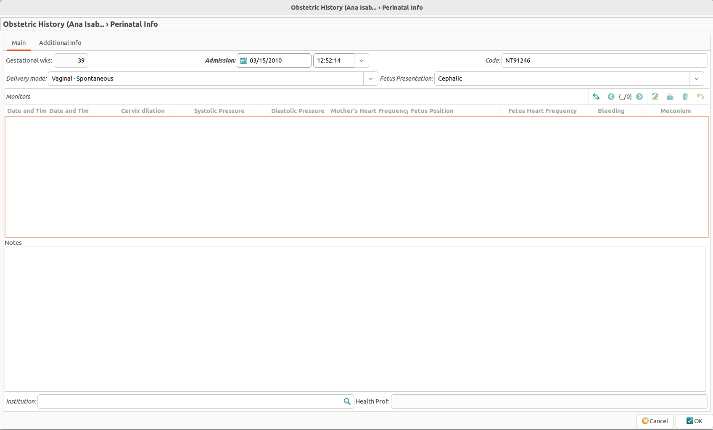
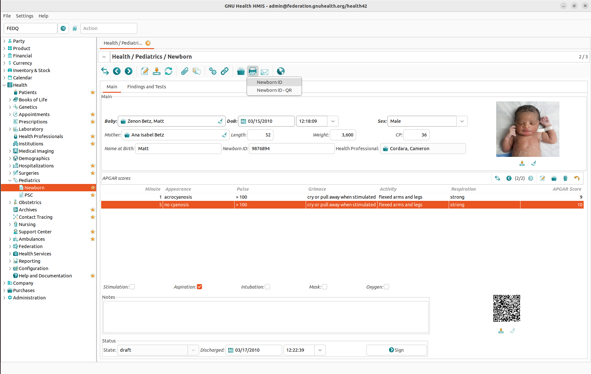
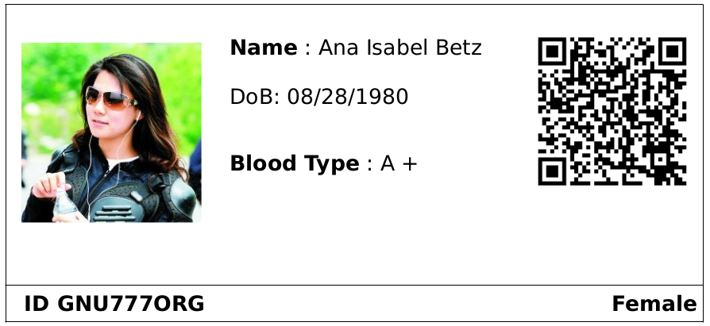
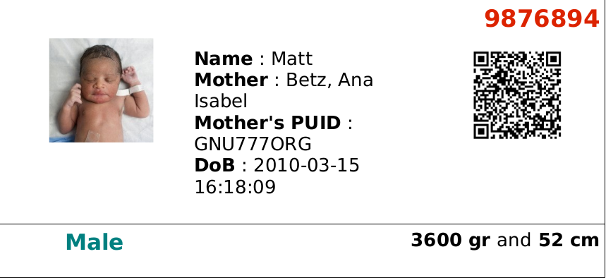
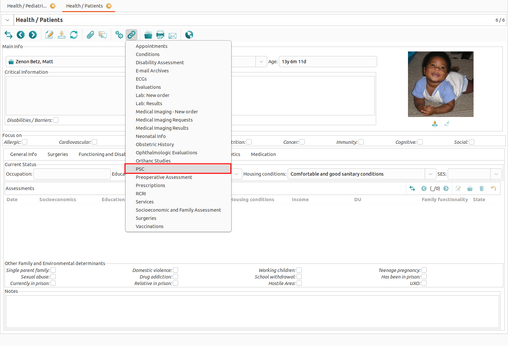
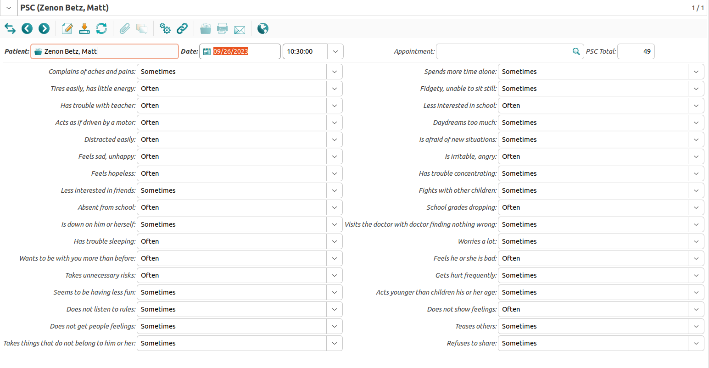

Pediatrics
Introduction to Pediatrics Section
The Health → Pediatrics section has the functionality for pediatric patients. It focuses on the basic pediatric evaluation, making emphasis in the nutritional, growth and development of the infant and child.
Neonatology
Creating a Newborn Record


When a baby is born, you create a new record in the Health → Pediatrics → Newborn section. This allows you to store information that is specific to newborns like APGAR scores, reflexes, neonatal signs and symptoms, and congenital diseases.
A Newborn record is linked to a Patient record which is linked to a Party record. So to store a baby in the system you have to create all three records, but this can easily be done from within the Health → Pediatrics → Newborn section:
Create a Newborn record and fill in the DoB (date and time of birth), Sex and Newborn ID fields.
In the Baby field, click on the Search a record icon (or press F2).
In the search dialog, click the New button to create a Patient record.
In the Patient form, click on the Search a record icon near the Person field (or press F2).
In the search dialog, click the New button to create a Party record.
In the Party form, enter the name of baby and fill in the other mandatory fields of the party record, then click the OK button to close the Party form.
The baby’s name is automatically filled into the Person field of the Patient record. Simply click the OK button to close the Patient form.
The baby’s name is automatically filled into the Baby field of the Newborn record. Simply click the Save button to store the record. At this point, the QR code is generated to be used for the wristband (see below).
Continue to fill in additional information about the newborn as appropriate.


During the procedure described above, the PUID (Person Unique Identification Number) will be generated automatically, and the Date of Birth will be copied from the Newborn record. Please be aware that the Sex field in the Newborn and Person records are not synchronized, so make sure to enter the correct information in both fields.
Please note that the antenatal information and the puerperium remains in the Gynecology section.
Newborn and Mother Wristbands


To maximize security and identification of the newborn, the system assigns a newborn ID, and allows to print the four identification bands including QR codes to place it on the baby’s and the mother’s wrists and ankles.
QR codes can be read from most mobile devices through the build-in camera, and they can store a lot more information than traditional bar codes.


To print a wristband for the baby, open the newborn form and click the Report button. Depending on your needs, choose the Newborn ID or Newborn ID - QR option.
This will generate an ODT file and open it in your word processor (e.g. LibreOffice Write or Microsoft Word).


PSC (Pediatrics Symptom Checklist)
GNU Health has incorporated the Pediatric Symptoms Checklist (PSC) developed by Dr. Michael Jellinek and Dr. Michael Murphy from the Massachusetts General Hospital. The authors define the PSC as “a brief screening questionnaire that is used by pediatricians and other health professionals to improve the recognition and treatment of psychosocial problems in children.”


GNU Health uses the standard PSC form – to be completed by the parents – and will include the Y-PSC. The system automatically calculates the total PSC score, based upon form values. It also highlights the evaluations that might indicate a child psychosocial impairment. The PSC cutoff values will be localized to the different countries (Japan, Germany, Holland …), so it will fit their recommended cutoffs.

